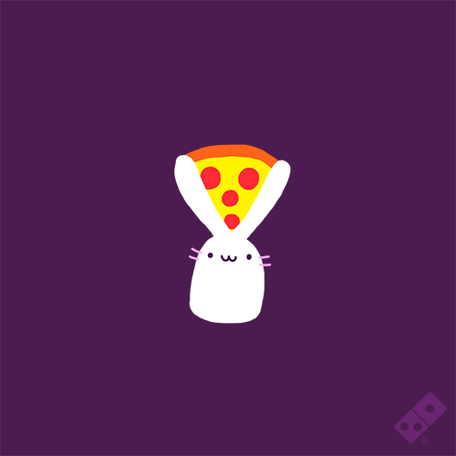

NEJDELŠÍ PIZZA NA SVÌTÌ

V italské Neapoli upekli nejdelší pizzu na svìtì. Více než 100 pizzaioli, jak se v Itálii øíká kuchaøùm pøipravujícím pizzu, vytvoøilo pochoutku dlouhou 1853 metrù.
Kuchaøi pracovali 11 hodin a na pizzu typu margherita podle agentury AP spotøebovali dvì tuny mouky, dvì tuny mozzarelly, 1,5 tuny rajèatové omáèky, 201 litrù oleje a 30 kilogramù èerstvé bazalky.
Jakmile rekord potvrdila komisaøka Guinnessovy knihy rekordù, mohli se do pizzy pustit lidé, kteøí rekordu pøihlíželi. Všechno se samozøejmì nesnìdlo, zbývající pizza proto byla rozvezena do nìkolika charitativních organizací, které ji rozdaly potøebným.
Rekordní peèení pizzy se konalo na podporu snahy dostat neapolskou pøípravu pizzy na seznam nehmotného kulturního dìdictví UNESCO.
Pøedchozí rekordní pizzu upekli loni bìhem EXPO v Milánì. Mìøila 1595,45 metru.
Created by: Nikola Dvoøáková